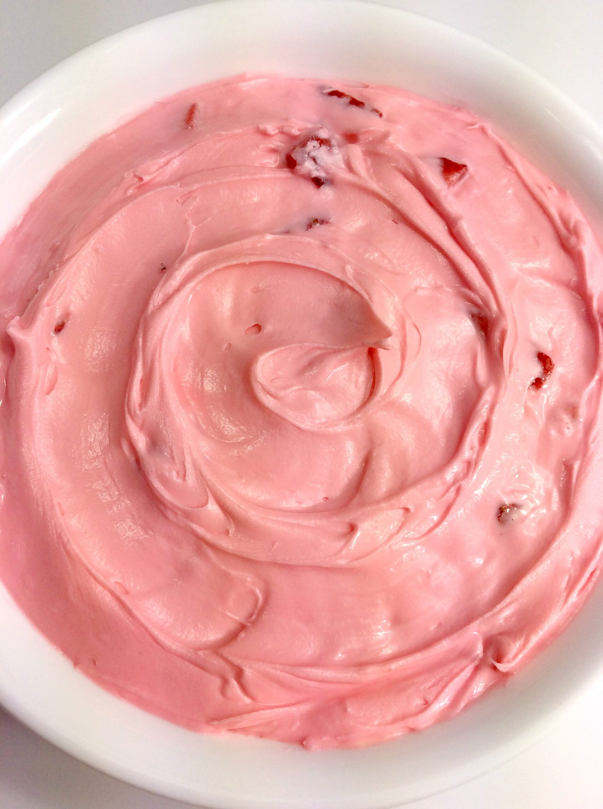

☰ CulinaryCookbook
Strawberry Buttercream Icing Recipe

Ingredients
| Ingredient |
Quantity |
| Powdered Sugar |
4 cups |
| Butter |
1 cup |
| Pureed strawberries |
1/4 cup |
| Decorating Bag |
1 |
| Decorating Tip |
1 |
| Mixer |
1 |
Instructions
- Mix Powdered Sugar and Butter in a mixer on low.
- Add Strawberry Puree and mix until the right consistency.
Back to Home